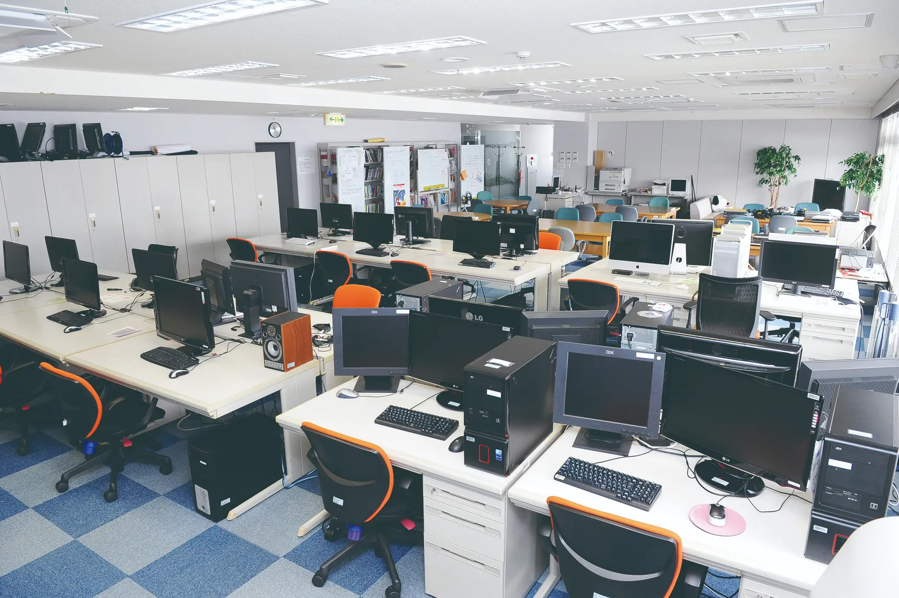

学びのPOINT
- 理論＋実践で養う「真に使える力」
- 教員は現役クリエイター＆研究者
- 専攻・領域の枠を超えた自由な科目履修
学びの環境
メディアクリエイティブセンター
本学科では、多分野のクリエイティブワークを担う人材の育成を目的としています。 そのため講義で学んだ理論をもとに、実際に手と頭を動かして作品づくりを行う時間を何より重視。 3DCG、映像、アプリ開発などの創作をストレスなく実践できるよう、最前線に対応した実習施設・設備を整えています。 とくに「メディアクリエイティブセンター」では、全国でも希少な制作環境をフル活用できます。

専攻と領域
領域に分布する科目を目的に合わせて履修可能
本学科には、「テクノロジー」と「デザイン」の2専攻があり、その中に5領域の科目が分布。 この学びのマップの上を、あなたにとって最適な道（科目）を選びながら歩むことができます。 興味・関心に合わせて複数領域を自在に組み合わせながら学ぶことも、 スペシャリストをめざして1つの領域を徹底的に追究することも可能です。
2領域・5領域一覧
| 情報メディア学科 | |
|---|---|
| テクノロジー専攻 | デザイン専攻 |
| プログラミングなどの演習で基礎を学び、実践的な課題に取り組むプロジェクト学修へ発展。 ゲームやアプリの制作を通して、情報を的確に扱い伝達するための技術を身につけます。 | デザインの基礎を学び、実践的な課題に取り組むプロジェクト学修へ発展。映像やグラフィックなど、 デザインの力で情報を人に正しく魅力的に伝える企画力や表現力を養います。 |
- メディアデータサイエンス領域
- インターネットメディア領域
- インタラクティブメディア＆ゲーム領域
- サウンド＆映像領域
- UI/UXデザイン領域
資料請求
資料をご希望の方は、以下の欄にご記入の上、送信してください。